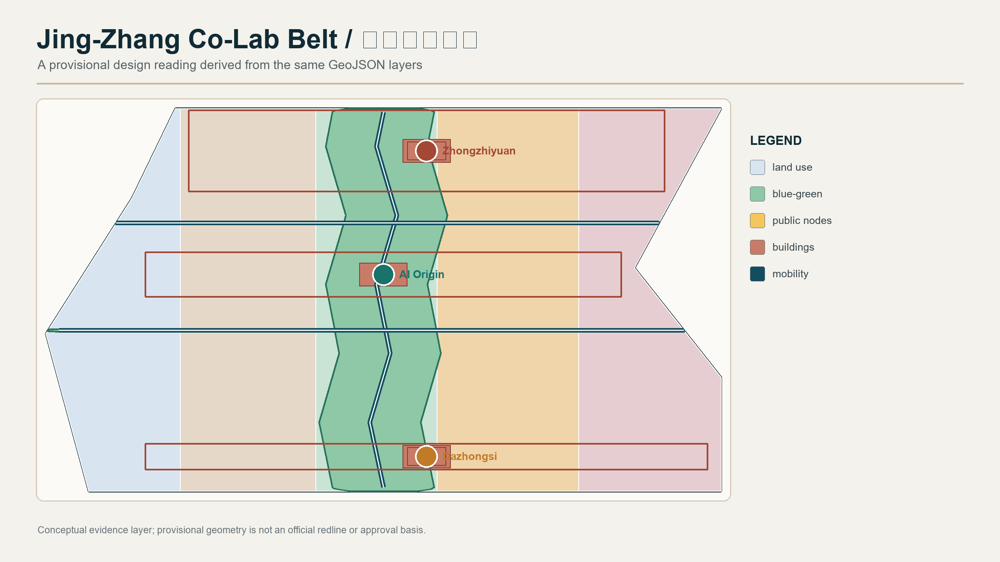
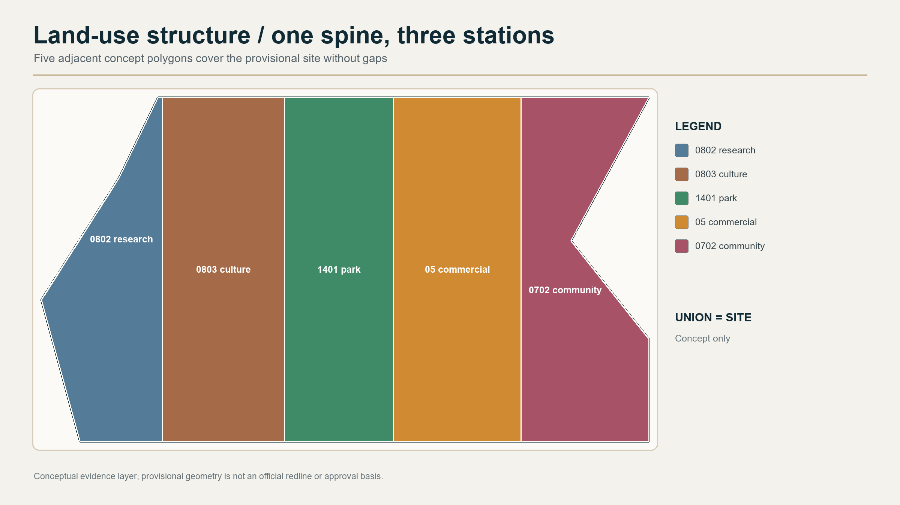
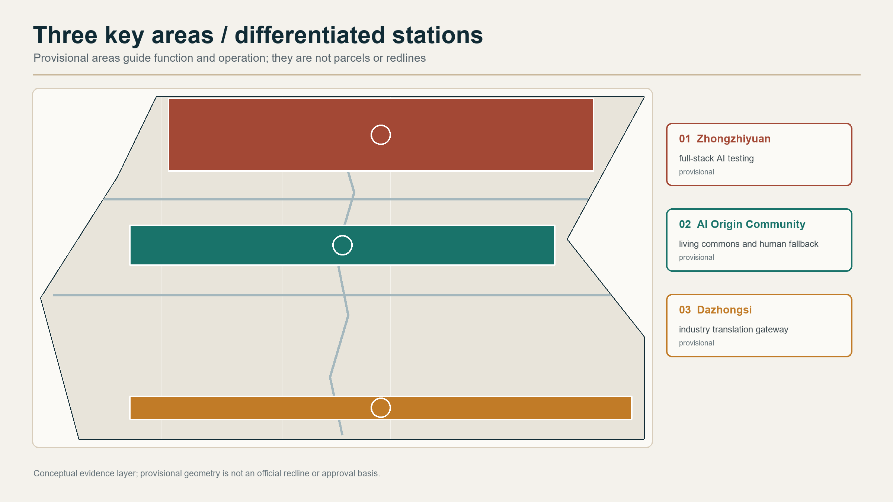
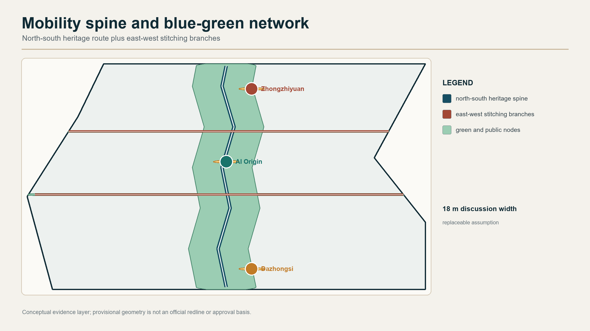
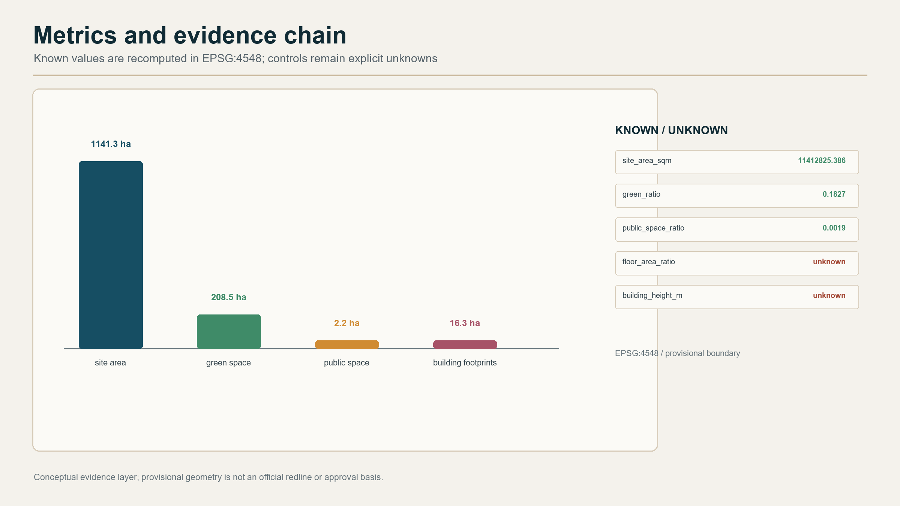

Core metrics
site_area_sqm11412825.386
green_ratio0.182703
public_space_ratio0.001949
Overall map
GeoJSON evidence
The one-spine three-station structure, land use, mobility, green-blue network, buildings, and public nodes.
Three scope levels
GeoJSON evidence
Coordinated research, overall design, and key-area detailing are separated.
Key areas
GeoJSON evidence
Zhongzhiyuan, AI Origin Community, and Dazhongsi are differentiated stations.
Mobility and blue-green
GeoJSON evidence
The north-south heritage spine is stitched by east-west conceptual branches.
Metrics and evidence
GeoJSON evidence
Known values are recomputed in EPSG:4548; missing controls stay unknown.
Evidence coverage
The page includes all expected review surfaces; the package matrices bind them to sources, assumptions, layers, drawings, and checks.
- Scope
- Key areas
- Land use
- Mobility
- Blue-green public space
- Buildings and renewal projects
- AI scenarios
- Core metrics
- Task coverage
- Self-check status
- Sources
- Assumptions